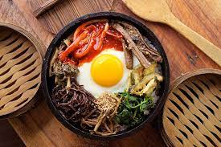

Bibimpap

Bibimbap is a popular Korean dish known for its colorful assortment of vegetables, meat, and a savory chili pepper paste. Here's how to make it:
Ingredients
- 2 cups of cooked white rice
- 1/2 cup of sliced carrots, blanched and sautéed
- 1/2 cup of sliced cucumber, seasoned with salt and sugar
- 1/2 cup of sliced zucchini, sautéed
- 1/2 cup of sliced mushrooms, sautéed
- 1/2 cup of spinach, blanched and seasoned with soy sauce and garlic
- 1/2 cup of ground beef or tofu, cooked with soy sauce and sesame oil
- 2-3 fried eggs
- Kimchi (optional)
- Gochujang (Korean red chili pepper paste)
- Sesame oil and sesame seeds for garnish
Instructions
- Start by preparing the individual components - cook the rice, blanch the spinach, and sauté the vegetables, beef or tofu.
- Arrange a portion of rice in each serving bowl.
- Place the cooked vegetables, meat/tofu, and seasoned cucumber on top of the rice in a circular pattern.
- Top with a fried egg, and garnish with kimchi if desired.
- Drizzle gochujang (Korean red chili pepper paste) and sesame oil over the top for flavor.
- Sprinkle with sesame seeds for added texture and flavor.
- Before eating, mix all the components together thoroughly, combining the flavors and colors.
- Enjoy your homemade bibimbap!